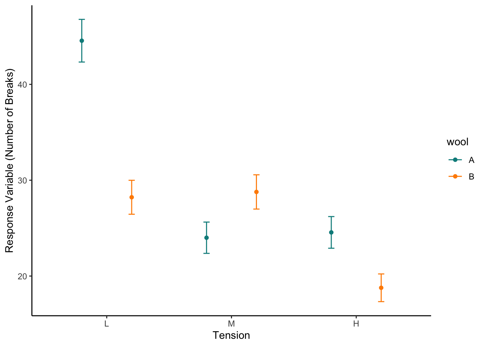

<!DOCTYPE html>
<html xmlns="http://www.w3.org/1999/xhtml" lang="en" xml:lang="en"><head>

<meta charset="utf-8">
<meta name="generator" content="quarto-1.2.269">

<meta name="viewport" content="width=device-width, initial-scale=1.0, user-scalable=yes">


<title>Poisson GLMs in R</title>
<style>
code{white-space: pre-wrap;}
span.smallcaps{font-variant: small-caps;}
div.columns{display: flex; gap: min(4vw, 1.5em);}
div.column{flex: auto; overflow-x: auto;}
div.hanging-indent{margin-left: 1.5em; text-indent: -1.5em;}
ul.task-list{list-style: none;}
ul.task-list li input[type="checkbox"] {
  width: 0.8em;
  margin: 0 0.8em 0.2em -1.6em;
  vertical-align: middle;
}
pre > code.sourceCode { white-space: pre; position: relative; }
pre > code.sourceCode > span { display: inline-block; line-height: 1.25; }
pre > code.sourceCode > span:empty { height: 1.2em; }
.sourceCode { overflow: visible; }
code.sourceCode > span { color: inherit; text-decoration: inherit; }
div.sourceCode { margin: 1em 0; }
pre.sourceCode { margin: 0; }
@media screen {
div.sourceCode { overflow: auto; }
}
@media print {
pre > code.sourceCode { white-space: pre-wrap; }
pre > code.sourceCode > span { text-indent: -5em; padding-left: 5em; }
}
pre.numberSource code
  { counter-reset: source-line 0; }
pre.numberSource code > span
  { position: relative; left: -4em; counter-increment: source-line; }
pre.numberSource code > span > a:first-child::before
  { content: counter(source-line);
    position: relative; left: -1em; text-align: right; vertical-align: baseline;
    border: none; display: inline-block;
    -webkit-touch-callout: none; -webkit-user-select: none;
    -khtml-user-select: none; -moz-user-select: none;
    -ms-user-select: none; user-select: none;
    padding: 0 4px; width: 4em;
    color: #aaaaaa;
  }
pre.numberSource { margin-left: 3em; border-left: 1px solid #aaaaaa;  padding-left: 4px; }
div.sourceCode
  {   }
@media screen {
pre > code.sourceCode > span > a:first-child::before { text-decoration: underline; }
}
code span.al { color: #ff0000; font-weight: bold; } /* Alert */
code span.an { color: #60a0b0; font-weight: bold; font-style: italic; } /* Annotation */
code span.at { color: #7d9029; } /* Attribute */
code span.bn { color: #40a070; } /* BaseN */
code span.bu { color: #008000; } /* BuiltIn */
code span.cf { color: #007020; font-weight: bold; } /* ControlFlow */
code span.ch { color: #4070a0; } /* Char */
code span.cn { color: #880000; } /* Constant */
code span.co { color: #60a0b0; font-style: italic; } /* Comment */
code span.cv { color: #60a0b0; font-weight: bold; font-style: italic; } /* CommentVar */
code span.do { color: #ba2121; font-style: italic; } /* Documentation */
code span.dt { color: #902000; } /* DataType */
code span.dv { color: #40a070; } /* DecVal */
code span.er { color: #ff0000; font-weight: bold; } /* Error */
code span.ex { } /* Extension */
code span.fl { color: #40a070; } /* Float */
code span.fu { color: #06287e; } /* Function */
code span.im { color: #008000; font-weight: bold; } /* Import */
code span.in { color: #60a0b0; font-weight: bold; font-style: italic; } /* Information */
code span.kw { color: #007020; font-weight: bold; } /* Keyword */
code span.op { color: #666666; } /* Operator */
code span.ot { color: #007020; } /* Other */
code span.pp { color: #bc7a00; } /* Preprocessor */
code span.sc { color: #4070a0; } /* SpecialChar */
code span.ss { color: #bb6688; } /* SpecialString */
code span.st { color: #4070a0; } /* String */
code span.va { color: #19177c; } /* Variable */
code span.vs { color: #4070a0; } /* VerbatimString */
code span.wa { color: #60a0b0; font-weight: bold; font-style: italic; } /* Warning */
</style>


<script src="PoissonGLMs_files/libs/clipboard/clipboard.min.js"></script>
<script src="PoissonGLMs_files/libs/quarto-html/quarto.js"></script>
<script src="PoissonGLMs_files/libs/quarto-html/popper.min.js"></script>
<script src="PoissonGLMs_files/libs/quarto-html/tippy.umd.min.js"></script>
<script src="PoissonGLMs_files/libs/quarto-html/anchor.min.js"></script>
<link href="PoissonGLMs_files/libs/quarto-html/tippy.css" rel="stylesheet">
<link href="PoissonGLMs_files/libs/quarto-html/quarto-syntax-highlighting.css" rel="stylesheet" id="quarto-text-highlighting-styles">
<script src="PoissonGLMs_files/libs/bootstrap/bootstrap.min.js"></script>
<link href="PoissonGLMs_files/libs/bootstrap/bootstrap-icons.css" rel="stylesheet">
<link href="PoissonGLMs_files/libs/bootstrap/bootstrap.min.css" rel="stylesheet" id="quarto-bootstrap" data-mode="light">


</head>

<body class="fullcontent">

<div id="quarto-content" class="page-columns page-rows-contents page-layout-article">

<main class="content" id="quarto-document-content">

<header id="title-block-header" class="quarto-title-block default">
<div class="quarto-title">
<h1 class="title">Poisson GLMs in R</h1>
</div>


<div class="quarto-title-meta">

    
  
    
  </div>
  

</header>

<div class="cell">
<div class="sourceCode cell-code" id="cb1"><pre class="sourceCode r code-with-copy"><code class="sourceCode r"><span id="cb1-1"><a href="#cb1-1" aria-hidden="true" tabindex="-1"></a><span class="fu">library</span>(tidyverse)</span></code><button title="Copy to Clipboard" class="code-copy-button"><i class="bi"></i></button></pre></div>
<div class="cell-output cell-output-stderr">
<pre><code>── Attaching core tidyverse packages ──────────────────────── tidyverse 2.0.0 ──
✔ dplyr     1.1.0     ✔ readr     2.1.4
✔ forcats   1.0.0     ✔ stringr   1.5.0
✔ ggplot2   3.4.1     ✔ tibble    3.1.8
✔ lubridate 1.9.2     ✔ tidyr     1.3.0
✔ purrr     1.0.1     
── Conflicts ────────────────────────────────────────── tidyverse_conflicts() ──
✖ dplyr::filter() masks stats::filter()
✖ dplyr::lag()    masks stats::lag()
ℹ Use the ]8;;http://conflicted.r-lib.org/conflicted package]8;; to force all conflicts to become errors</code></pre>
</div>
<div class="sourceCode cell-code" id="cb3"><pre class="sourceCode r code-with-copy"><code class="sourceCode r"><span id="cb3-1"><a href="#cb3-1" aria-hidden="true" tabindex="-1"></a><span class="fu">library</span>(performance)</span></code><button title="Copy to Clipboard" class="code-copy-button"><i class="bi"></i></button></pre></div>
</div>
<p>Okay now we know the general method for applying models The method for applying a poisson model follows the same methods and uses the same diagnostic methods</p>
<section id="preliminary-data-exploration" class="level1">
<h1>Preliminary Data Exploration</h1>
<p>We will download the data set warpbreaks</p>
<div class="cell">
<div class="sourceCode cell-code" id="cb4"><pre class="sourceCode r code-with-copy"><code class="sourceCode r"><span id="cb4-1"><a href="#cb4-1" aria-hidden="true" tabindex="-1"></a><span class="fu">data</span>(<span class="st">"warpbreaks"</span>)</span></code><button title="Copy to Clipboard" class="code-copy-button"><i class="bi"></i></button></pre></div>
</div>
<p>This data has the count of the number of breaks across types of wool and tension We will look at the how wool type and tension effect the number of breaks Again first we will summarise the data and also visualise it, often the best way to find issues/mistakes</p>
<div class="cell">
<div class="sourceCode cell-code" id="cb5"><pre class="sourceCode r code-with-copy"><code class="sourceCode r"><span id="cb5-1"><a href="#cb5-1" aria-hidden="true" tabindex="-1"></a><span class="fu">summary</span>(warpbreaks)</span></code><button title="Copy to Clipboard" class="code-copy-button"><i class="bi"></i></button></pre></div>
<div class="cell-output cell-output-stdout">
<pre><code>     breaks      wool   tension
 Min.   :10.00   A:27   L:18   
 1st Qu.:18.25   B:27   M:18   
 Median :26.00          H:18   
 Mean   :28.15                 
 3rd Qu.:34.00                 
 Max.   :70.00                 </code></pre>
</div>
</div>
<p>This tells us there are two types and three tensions</p>
<div class="cell">
<div class="sourceCode cell-code" id="cb7"><pre class="sourceCode r code-with-copy"><code class="sourceCode r"><span id="cb7-1"><a href="#cb7-1" aria-hidden="true" tabindex="-1"></a><span class="fu">ggplot</span>()<span class="sc">+</span></span>
<span id="cb7-2"><a href="#cb7-2" aria-hidden="true" tabindex="-1"></a>  <span class="fu">geom_boxplot</span>(warpbreaks,<span class="at">mapping=</span><span class="fu">aes</span>(<span class="at">x=</span>tension,<span class="at">y=</span>breaks,<span class="at">colour=</span>wool))<span class="sc">+</span></span>
<span id="cb7-3"><a href="#cb7-3" aria-hidden="true" tabindex="-1"></a>  <span class="fu">scale_colour_manual</span>(<span class="at">values=</span><span class="fu">c</span>(<span class="st">"darkcyan"</span>,<span class="st">"darkorange"</span>))<span class="sc">+</span></span>
<span id="cb7-4"><a href="#cb7-4" aria-hidden="true" tabindex="-1"></a>  <span class="fu">labs</span>(<span class="at">x=</span><span class="st">"Tensions"</span>,<span class="at">y=</span><span class="st">"Wool Breaks"</span>)<span class="sc">+</span></span>
<span id="cb7-5"><a href="#cb7-5" aria-hidden="true" tabindex="-1"></a>  <span class="fu">theme_classic</span>()</span></code><button title="Copy to Clipboard" class="code-copy-button"><i class="bi"></i></button></pre></div>
<div class="cell-output-display">
<p></p>
</div>
</div>
</section>
<section id="modelling" class="level1">
<h1>Modelling</h1>
<p>This seems to show different breaks across wools and tensions</p>
<p>Thus we want to analyse with interaction term</p>
<div class="cell">
<div class="sourceCode cell-code" id="cb8"><pre class="sourceCode r code-with-copy"><code class="sourceCode r"><span id="cb8-1"><a href="#cb8-1" aria-hidden="true" tabindex="-1"></a>glm1<span class="fl">.1</span><span class="ot">&lt;-</span><span class="fu">glm</span>(breaks<span class="sc">~</span>tension<span class="sc">*</span>wool,warpbreaks,<span class="at">family=</span>poisson)</span>
<span id="cb8-2"><a href="#cb8-2" aria-hidden="true" tabindex="-1"></a></span>
<span id="cb8-3"><a href="#cb8-3" aria-hidden="true" tabindex="-1"></a><span class="fu">check_model</span>(glm1<span class="fl">.1</span>)</span></code><button title="Copy to Clipboard" class="code-copy-button"><i class="bi"></i></button></pre></div>
<div class="cell-output cell-output-stderr">
<pre><code>Variable `Component` is not in your data frame :/</code></pre>
</div>
<div class="cell-output-display">
<p></p>
</div>
</div>
<div class="cell">
<div class="sourceCode cell-code" id="cb10"><pre class="sourceCode r code-with-copy"><code class="sourceCode r"><span id="cb10-1"><a href="#cb10-1" aria-hidden="true" tabindex="-1"></a><span class="fu">summary</span>(glm1<span class="fl">.1</span>)</span></code><button title="Copy to Clipboard" class="code-copy-button"><i class="bi"></i></button></pre></div>
<div class="cell-output cell-output-stdout">
<pre><code>
Call:
glm(formula = breaks ~ tension * wool, family = poisson, data = warpbreaks)

Deviance Residuals: 
    Min       1Q   Median       3Q      Max  
-3.3383  -1.4844  -0.1291   1.1725   3.5153  

Coefficients:
               Estimate Std. Error z value Pr(&gt;|z|)    
(Intercept)     3.79674    0.04994  76.030  &lt; 2e-16 ***
tensionM       -0.61868    0.08440  -7.330 2.30e-13 ***
tensionH       -0.59580    0.08378  -7.112 1.15e-12 ***
woolB          -0.45663    0.08019  -5.694 1.24e-08 ***
tensionM:woolB  0.63818    0.12215   5.224 1.75e-07 ***
tensionH:woolB  0.18836    0.12990   1.450    0.147    
---
Signif. codes:  0 '***' 0.001 '**' 0.01 '*' 0.05 '.' 0.1 ' ' 1

(Dispersion parameter for poisson family taken to be 1)

    Null deviance: 297.37  on 53  degrees of freedom
Residual deviance: 182.31  on 48  degrees of freedom
AIC: 468.97

Number of Fisher Scoring iterations: 4</code></pre>
</div>
</div>
<p>We can see some significant differences lets plot them, again simulate data then predict</p>
<div class="cell">
<div class="sourceCode cell-code" id="cb12"><pre class="sourceCode r code-with-copy"><code class="sourceCode r"><span id="cb12-1"><a href="#cb12-1" aria-hidden="true" tabindex="-1"></a>NewData<span class="ot">&lt;-</span><span class="fu">expand_grid</span>(<span class="at">wool=</span><span class="fu">c</span>(<span class="st">"A"</span>,<span class="st">"B"</span>),</span>
<span id="cb12-2"><a href="#cb12-2" aria-hidden="true" tabindex="-1"></a>                     <span class="at">tension=</span><span class="fu">c</span>(<span class="st">"L"</span>,<span class="st">"M"</span>,<span class="st">"H"</span>))</span>
<span id="cb12-3"><a href="#cb12-3" aria-hidden="true" tabindex="-1"></a></span>
<span id="cb12-4"><a href="#cb12-4" aria-hidden="true" tabindex="-1"></a>Pred<span class="ot">&lt;-</span><span class="fu">predict</span>(glm1<span class="fl">.1</span>,NewData,<span class="at">se.fit=</span><span class="cn">TRUE</span>,<span class="st">"response"</span>)</span>
<span id="cb12-5"><a href="#cb12-5" aria-hidden="true" tabindex="-1"></a></span>
<span id="cb12-6"><a href="#cb12-6" aria-hidden="true" tabindex="-1"></a>NewData<span class="sc">$</span>response<span class="ot">&lt;-</span>Pred<span class="sc">$</span>fit</span>
<span id="cb12-7"><a href="#cb12-7" aria-hidden="true" tabindex="-1"></a></span>
<span id="cb12-8"><a href="#cb12-8" aria-hidden="true" tabindex="-1"></a>NewData<span class="sc">$</span>se.fit<span class="ot">&lt;-</span>Pred<span class="sc">$</span>se.fit</span>
<span id="cb12-9"><a href="#cb12-9" aria-hidden="true" tabindex="-1"></a></span>
<span id="cb12-10"><a href="#cb12-10" aria-hidden="true" tabindex="-1"></a>  <span class="fu">ggplot</span>(NewData)<span class="sc">+</span></span>
<span id="cb12-11"><a href="#cb12-11" aria-hidden="true" tabindex="-1"></a>  <span class="fu">geom_point</span>(<span class="fu">aes</span>(<span class="at">x=</span>tension,<span class="at">y=</span>response,<span class="at">colour=</span>wool),</span>
<span id="cb12-12"><a href="#cb12-12" aria-hidden="true" tabindex="-1"></a>             <span class="at">position=</span><span class="fu">position_dodge</span>(<span class="fl">0.8</span>))<span class="sc">+</span></span>
<span id="cb12-13"><a href="#cb12-13" aria-hidden="true" tabindex="-1"></a>  <span class="fu">geom_errorbar</span>(<span class="fu">aes</span>(<span class="at">x=</span>tension,<span class="at">ymax=</span>response<span class="sc">+</span>se.fit,</span>
<span id="cb12-14"><a href="#cb12-14" aria-hidden="true" tabindex="-1"></a>                    <span class="at">ymin=</span>response<span class="sc">-</span>se.fit,<span class="at">colour=</span>wool),</span>
<span id="cb12-15"><a href="#cb12-15" aria-hidden="true" tabindex="-1"></a>                <span class="at">width=</span><span class="fl">0.1</span>,</span>
<span id="cb12-16"><a href="#cb12-16" aria-hidden="true" tabindex="-1"></a>                <span class="at">position=</span><span class="fu">position_dodge</span>(<span class="fl">0.8</span>))<span class="sc">+</span></span>
<span id="cb12-17"><a href="#cb12-17" aria-hidden="true" tabindex="-1"></a>  <span class="fu">scale_colour_manual</span>(<span class="at">values=</span><span class="fu">c</span>(<span class="st">"darkcyan"</span>,<span class="st">"darkorange"</span>))<span class="sc">+</span></span>
<span id="cb12-18"><a href="#cb12-18" aria-hidden="true" tabindex="-1"></a>  <span class="fu">labs</span>(<span class="at">x=</span><span class="st">"Tension"</span>,<span class="at">y=</span><span class="st">"Response Variable (Number of Breaks)"</span>)<span class="sc">+</span></span>
<span id="cb12-19"><a href="#cb12-19" aria-hidden="true" tabindex="-1"></a>  <span class="fu">theme_classic</span>()</span></code><button title="Copy to Clipboard" class="code-copy-button"><i class="bi"></i></button></pre></div>
<div class="cell-output-display">
<p></p>
</div>
</div>
<p>We have tension which is an ordered factor but r orders things alphabetically so we can tell r the order is L M H</p>
<div class="cell">
<div class="sourceCode cell-code" id="cb13"><pre class="sourceCode r code-with-copy"><code class="sourceCode r"><span id="cb13-1"><a href="#cb13-1" aria-hidden="true" tabindex="-1"></a>NewData <span class="sc">%&gt;%</span> </span>
<span id="cb13-2"><a href="#cb13-2" aria-hidden="true" tabindex="-1"></a>  <span class="fu">mutate</span>(<span class="at">tension=</span><span class="fu">factor</span>(tension,<span class="at">levels=</span><span class="fu">c</span>(<span class="st">"L"</span>,<span class="st">"M"</span>,<span class="st">"H"</span>))) <span class="sc">%&gt;%</span> </span>
<span id="cb13-3"><a href="#cb13-3" aria-hidden="true" tabindex="-1"></a><span class="fu">ggplot</span>()<span class="sc">+</span></span>
<span id="cb13-4"><a href="#cb13-4" aria-hidden="true" tabindex="-1"></a>  <span class="fu">geom_point</span>(<span class="fu">aes</span>(<span class="at">x=</span>tension,<span class="at">y=</span>response,<span class="at">colour=</span>wool),</span>
<span id="cb13-5"><a href="#cb13-5" aria-hidden="true" tabindex="-1"></a>             <span class="at">position=</span><span class="fu">position_dodge</span>(<span class="fl">0.8</span>))<span class="sc">+</span></span>
<span id="cb13-6"><a href="#cb13-6" aria-hidden="true" tabindex="-1"></a>  <span class="fu">geom_errorbar</span>(<span class="fu">aes</span>(<span class="at">x=</span>tension,<span class="at">ymax=</span>response<span class="sc">+</span>se.fit,</span>
<span id="cb13-7"><a href="#cb13-7" aria-hidden="true" tabindex="-1"></a>                    <span class="at">ymin=</span>response<span class="sc">-</span>se.fit,<span class="at">colour=</span>wool),</span>
<span id="cb13-8"><a href="#cb13-8" aria-hidden="true" tabindex="-1"></a>                <span class="at">width=</span><span class="fl">0.1</span>,</span>
<span id="cb13-9"><a href="#cb13-9" aria-hidden="true" tabindex="-1"></a>                <span class="at">position=</span><span class="fu">position_dodge</span>(<span class="fl">0.8</span>))<span class="sc">+</span></span>
<span id="cb13-10"><a href="#cb13-10" aria-hidden="true" tabindex="-1"></a>  <span class="fu">scale_colour_manual</span>(<span class="at">values=</span><span class="fu">c</span>(<span class="st">"darkcyan"</span>,<span class="st">"darkorange"</span>))<span class="sc">+</span></span>
<span id="cb13-11"><a href="#cb13-11" aria-hidden="true" tabindex="-1"></a>  <span class="fu">labs</span>(<span class="at">x=</span><span class="st">"Tension"</span>,<span class="at">y=</span><span class="st">"Response Variable (Number of Breaks)"</span>)<span class="sc">+</span></span>
<span id="cb13-12"><a href="#cb13-12" aria-hidden="true" tabindex="-1"></a>  <span class="fu">theme_classic</span>()</span></code><button title="Copy to Clipboard" class="code-copy-button"><i class="bi"></i></button></pre></div>
<div class="cell-output-display">
<p></p>
</div>
</div>
</section>
<section id="seatbelts" class="level1">
<h1>Seatbelts</h1>
<p>We will now look at another df that is built-in to r</p>
<div class="cell">
<div class="sourceCode cell-code" id="cb14"><pre class="sourceCode r code-with-copy"><code class="sourceCode r"><span id="cb14-1"><a href="#cb14-1" aria-hidden="true" tabindex="-1"></a><span class="fu">data</span>(Seatbelts)</span>
<span id="cb14-2"><a href="#cb14-2" aria-hidden="true" tabindex="-1"></a></span>
<span id="cb14-3"><a href="#cb14-3" aria-hidden="true" tabindex="-1"></a><span class="fu">summary</span>(Seatbelts)</span></code><button title="Copy to Clipboard" class="code-copy-button"><i class="bi"></i></button></pre></div>
<div class="cell-output cell-output-stdout">
<pre><code> DriversKilled      drivers         front             rear      
 Min.   : 60.0   Min.   :1057   Min.   : 426.0   Min.   :224.0  
 1st Qu.:104.8   1st Qu.:1462   1st Qu.: 715.5   1st Qu.:344.8  
 Median :118.5   Median :1631   Median : 828.5   Median :401.5  
 Mean   :122.8   Mean   :1670   Mean   : 837.2   Mean   :401.2  
 3rd Qu.:138.0   3rd Qu.:1851   3rd Qu.: 950.8   3rd Qu.:456.2  
 Max.   :198.0   Max.   :2654   Max.   :1299.0   Max.   :646.0  
      kms         PetrolPrice        VanKilled           law        
 Min.   : 7685   Min.   :0.08118   Min.   : 2.000   Min.   :0.0000  
 1st Qu.:12685   1st Qu.:0.09258   1st Qu.: 6.000   1st Qu.:0.0000  
 Median :14987   Median :0.10448   Median : 8.000   Median :0.0000  
 Mean   :14994   Mean   :0.10362   Mean   : 9.057   Mean   :0.1198  
 3rd Qu.:17202   3rd Qu.:0.11406   3rd Qu.:12.000   3rd Qu.:0.0000  
 Max.   :21626   Max.   :0.13303   Max.   :17.000   Max.   :1.0000  </code></pre>
</div>
</div>
<p>It is a ‘time-series’ type of dataframe so we convert it</p>
<div class="cell">
<div class="sourceCode cell-code" id="cb16"><pre class="sourceCode r code-with-copy"><code class="sourceCode r"><span id="cb16-1"><a href="#cb16-1" aria-hidden="true" tabindex="-1"></a><span class="co">#install.packages("timetk")</span></span>
<span id="cb16-2"><a href="#cb16-2" aria-hidden="true" tabindex="-1"></a><span class="fu">library</span>(timetk)</span>
<span id="cb16-3"><a href="#cb16-3" aria-hidden="true" tabindex="-1"></a></span>
<span id="cb16-4"><a href="#cb16-4" aria-hidden="true" tabindex="-1"></a>seatbelts_df<span class="ot">&lt;-</span><span class="fu">tk_tbl</span>(Seatbelts) <span class="sc">%&gt;%</span> </span>
<span id="cb16-5"><a href="#cb16-5" aria-hidden="true" tabindex="-1"></a>  <span class="fu">rownames_to_column</span>(<span class="st">"MonthsN"</span>) <span class="sc">%&gt;%</span> </span>
<span id="cb16-6"><a href="#cb16-6" aria-hidden="true" tabindex="-1"></a>  <span class="fu">mutate</span>(<span class="at">law=</span><span class="fu">as.factor</span>(law))</span></code><button title="Copy to Clipboard" class="code-copy-button"><i class="bi"></i></button></pre></div>
</div>
<p>This gives us the number of traffic deaths over time in UK.</p>
<div class="cell">
<div class="sourceCode cell-code" id="cb17"><pre class="sourceCode r code-with-copy"><code class="sourceCode r"><span id="cb17-1"><a href="#cb17-1" aria-hidden="true" tabindex="-1"></a><span class="fu">ggplot</span>(seatbelts_df)<span class="sc">+</span></span>
<span id="cb17-2"><a href="#cb17-2" aria-hidden="true" tabindex="-1"></a>  <span class="fu">geom_boxplot</span>(<span class="fu">aes</span>(<span class="at">x=</span>law,<span class="at">y=</span>DriversKilled))<span class="sc">+</span></span>
<span id="cb17-3"><a href="#cb17-3" aria-hidden="true" tabindex="-1"></a>  <span class="fu">labs</span>(<span class="at">x=</span><span class="st">"Seatbelt Law"</span>,<span class="at">y=</span><span class="st">"Number of Driver Deaths"</span>)<span class="sc">+</span></span>
<span id="cb17-4"><a href="#cb17-4" aria-hidden="true" tabindex="-1"></a>  <span class="fu">theme_classic</span>()</span></code><button title="Copy to Clipboard" class="code-copy-button"><i class="bi"></i></button></pre></div>
<div class="cell-output-display">
<p></p>
</div>
<div class="sourceCode cell-code" id="cb18"><pre class="sourceCode r code-with-copy"><code class="sourceCode r"><span id="cb18-1"><a href="#cb18-1" aria-hidden="true" tabindex="-1"></a><span class="fu">ggplot</span>(seatbelts_df)<span class="sc">+</span></span>
<span id="cb18-2"><a href="#cb18-2" aria-hidden="true" tabindex="-1"></a>  <span class="fu">geom_point</span>(<span class="fu">aes</span>(<span class="at">x=</span>drivers,<span class="at">y=</span>DriversKilled))<span class="sc">+</span></span>
<span id="cb18-3"><a href="#cb18-3" aria-hidden="true" tabindex="-1"></a>  <span class="fu">labs</span>(<span class="at">x=</span><span class="st">"Number of Drivers"</span>,<span class="at">y=</span><span class="st">"Number of Driver Deaths"</span>)<span class="sc">+</span></span>
<span id="cb18-4"><a href="#cb18-4" aria-hidden="true" tabindex="-1"></a>  <span class="fu">theme_classic</span>()</span></code><button title="Copy to Clipboard" class="code-copy-button"><i class="bi"></i></button></pre></div>
<div class="cell-output-display">
<p></p>
</div>
</div>
<p>There seems to be some clear relationships between these variables.</p>
<p>We will see if the number of drivers as well as the occurrence of seatbelt laws effects the number of drivers</p>
<div class="cell">
<div class="sourceCode cell-code" id="cb19"><pre class="sourceCode r code-with-copy"><code class="sourceCode r"><span id="cb19-1"><a href="#cb19-1" aria-hidden="true" tabindex="-1"></a>glm2<span class="fl">.1</span><span class="ot">&lt;-</span><span class="fu">glm</span>(DriversKilled<span class="sc">~</span>drivers<span class="sc">*</span>law,<span class="at">data=</span>seatbelts_df,<span class="at">family=</span>poisson)</span>
<span id="cb19-2"><a href="#cb19-2" aria-hidden="true" tabindex="-1"></a></span>
<span id="cb19-3"><a href="#cb19-3" aria-hidden="true" tabindex="-1"></a><span class="fu">check_model</span>(glm2<span class="fl">.1</span>)</span></code><button title="Copy to Clipboard" class="code-copy-button"><i class="bi"></i></button></pre></div>
<div class="cell-output cell-output-stderr">
<pre><code>Variable `Component` is not in your data frame :/</code></pre>
</div>
<div class="cell-output-display">
<p></p>
</div>
<div class="sourceCode cell-code" id="cb21"><pre class="sourceCode r code-with-copy"><code class="sourceCode r"><span id="cb21-1"><a href="#cb21-1" aria-hidden="true" tabindex="-1"></a><span class="fu">summary</span>(glm2<span class="fl">.1</span>)</span></code><button title="Copy to Clipboard" class="code-copy-button"><i class="bi"></i></button></pre></div>
<div class="cell-output cell-output-stdout">
<pre><code>
Call:
glm(formula = DriversKilled ~ drivers * law, family = poisson, 
    data = seatbelts_df)

Deviance Residuals: 
     Min        1Q    Median        3Q       Max  
-2.97998  -0.78935   0.01288   0.61425   2.79475  

Coefficients:
               Estimate Std. Error z value Pr(&gt;|z|)    
(Intercept)   3.796e+00  4.335e-02  87.548  &lt; 2e-16 ***
drivers       5.976e-04  2.429e-05  24.608  &lt; 2e-16 ***
law1         -4.144e-01  1.448e-01  -2.861  0.00423 ** 
drivers:law1  3.178e-04  1.034e-04   3.073  0.00212 ** 
---
Signif. codes:  0 '***' 0.001 '**' 0.01 '*' 0.05 '.' 0.1 ' ' 1

(Dispersion parameter for poisson family taken to be 1)

    Null deviance: 984.50  on 191  degrees of freedom
Residual deviance: 207.02  on 188  degrees of freedom
AIC: 1487.8

Number of Fisher Scoring iterations: 4</code></pre>
</div>
</div>
<p>This shows some significant results but lets plot the model outputs to really understand what the model shows.</p>
<div class="cell">
<div class="sourceCode cell-code" id="cb23"><pre class="sourceCode r code-with-copy"><code class="sourceCode r"><span id="cb23-1"><a href="#cb23-1" aria-hidden="true" tabindex="-1"></a>NewData_Seatbelts<span class="ot">&lt;-</span><span class="fu">data.frame</span>(<span class="at">law=</span>seatbelts_df<span class="sc">$</span>law,</span>
<span id="cb23-2"><a href="#cb23-2" aria-hidden="true" tabindex="-1"></a>                               <span class="at">drivers=</span>seatbelts_df<span class="sc">$</span>drivers)</span>
<span id="cb23-3"><a href="#cb23-3" aria-hidden="true" tabindex="-1"></a></span>
<span id="cb23-4"><a href="#cb23-4" aria-hidden="true" tabindex="-1"></a></span>
<span id="cb23-5"><a href="#cb23-5" aria-hidden="true" tabindex="-1"></a>Pred_Seat<span class="ot">&lt;-</span><span class="fu">predict</span>(glm2<span class="fl">.1</span>,NewData_Seatbelts,<span class="at">se.fit=</span><span class="cn">TRUE</span>,<span class="st">"response"</span>)</span>
<span id="cb23-6"><a href="#cb23-6" aria-hidden="true" tabindex="-1"></a></span>
<span id="cb23-7"><a href="#cb23-7" aria-hidden="true" tabindex="-1"></a>NewData_Seatbelts<span class="sc">$</span>response<span class="ot">&lt;-</span>Pred_Seat<span class="sc">$</span>fit</span>
<span id="cb23-8"><a href="#cb23-8" aria-hidden="true" tabindex="-1"></a></span>
<span id="cb23-9"><a href="#cb23-9" aria-hidden="true" tabindex="-1"></a>NewData_Seatbelts<span class="sc">$</span>se.fit<span class="ot">&lt;-</span>Pred_Seat<span class="sc">$</span>se.fit</span>
<span id="cb23-10"><a href="#cb23-10" aria-hidden="true" tabindex="-1"></a></span>
<span id="cb23-11"><a href="#cb23-11" aria-hidden="true" tabindex="-1"></a>NewData_Seatbelts <span class="sc">%&gt;%</span> </span>
<span id="cb23-12"><a href="#cb23-12" aria-hidden="true" tabindex="-1"></a>  <span class="fu">mutate</span>(<span class="at">law=</span><span class="fu">as.factor</span>(law)) <span class="sc">%&gt;%</span> </span>
<span id="cb23-13"><a href="#cb23-13" aria-hidden="true" tabindex="-1"></a><span class="fu">ggplot</span>()<span class="sc">+</span></span>
<span id="cb23-14"><a href="#cb23-14" aria-hidden="true" tabindex="-1"></a>  <span class="fu">geom_ribbon</span>(<span class="fu">aes</span>(<span class="at">x=</span>drivers,<span class="at">ymax=</span>response<span class="sc">+</span>se.fit,</span>
<span id="cb23-15"><a href="#cb23-15" aria-hidden="true" tabindex="-1"></a>                  <span class="at">ymin=</span>response<span class="sc">-</span>se.fit,<span class="at">fill=</span>law),</span>
<span id="cb23-16"><a href="#cb23-16" aria-hidden="true" tabindex="-1"></a>              <span class="at">alpha=</span><span class="fl">0.6</span>)<span class="sc">+</span></span>
<span id="cb23-17"><a href="#cb23-17" aria-hidden="true" tabindex="-1"></a>  <span class="fu">geom_line</span>(<span class="fu">aes</span>(<span class="at">x=</span>drivers,<span class="at">y=</span>response,</span>
<span id="cb23-18"><a href="#cb23-18" aria-hidden="true" tabindex="-1"></a>                <span class="at">colour=</span>law))<span class="sc">+</span></span>
<span id="cb23-19"><a href="#cb23-19" aria-hidden="true" tabindex="-1"></a>  <span class="fu">scale_colour_manual</span>(<span class="at">values=</span><span class="fu">c</span>(<span class="st">"darkcyan"</span>,<span class="st">"darkorange"</span>))<span class="sc">+</span></span>
<span id="cb23-20"><a href="#cb23-20" aria-hidden="true" tabindex="-1"></a>  <span class="fu">scale_fill_manual</span>(<span class="at">values=</span><span class="fu">c</span>(<span class="st">"darkcyan"</span>,<span class="st">"darkorange"</span>))<span class="sc">+</span></span>
<span id="cb23-21"><a href="#cb23-21" aria-hidden="true" tabindex="-1"></a>  <span class="fu">labs</span>(<span class="at">x=</span><span class="st">"Number of Drivers"</span>,<span class="at">y=</span><span class="st">"Response Variable (Number of Driver Deaths)"</span>)<span class="sc">+</span></span>
<span id="cb23-22"><a href="#cb23-22" aria-hidden="true" tabindex="-1"></a>  <span class="fu">theme_classic</span>()</span></code><button title="Copy to Clipboard" class="code-copy-button"><i class="bi"></i></button></pre></div>
<div class="cell-output-display">
<p></p>
</div>
</div>
</section>

</main>
<!-- /main column -->
<script id="quarto-html-after-body" type="application/javascript">
window.document.addEventListener("DOMContentLoaded", function (event) {
  const toggleBodyColorMode = (bsSheetEl) => {
    const mode = bsSheetEl.getAttribute("data-mode");
    const bodyEl = window.document.querySelector("body");
    if (mode === "dark") {
      bodyEl.classList.add("quarto-dark");
      bodyEl.classList.remove("quarto-light");
    } else {
      bodyEl.classList.add("quarto-light");
      bodyEl.classList.remove("quarto-dark");
    }
  }
  const toggleBodyColorPrimary = () => {
    const bsSheetEl = window.document.querySelector("link#quarto-bootstrap");
    if (bsSheetEl) {
      toggleBodyColorMode(bsSheetEl);
    }
  }
  toggleBodyColorPrimary();  
  const icon = "";
  const anchorJS = new window.AnchorJS();
  anchorJS.options = {
    placement: 'right',
    icon: icon
  };
  anchorJS.add('.anchored');
  const clipboard = new window.ClipboardJS('.code-copy-button', {
    target: function(trigger) {
      return trigger.previousElementSibling;
    }
  });
  clipboard.on('success', function(e) {
    // button target
    const button = e.trigger;
    // don't keep focus
    button.blur();
    // flash "checked"
    button.classList.add('code-copy-button-checked');
    var currentTitle = button.getAttribute("title");
    button.setAttribute("title", "Copied!");
    let tooltip;
    if (window.bootstrap) {
      button.setAttribute("data-bs-toggle", "tooltip");
      button.setAttribute("data-bs-placement", "left");
      button.setAttribute("data-bs-title", "Copied!");
      tooltip = new bootstrap.Tooltip(button, 
        { trigger: "manual", 
          customClass: "code-copy-button-tooltip",
          offset: [0, -8]});
      tooltip.show();    
    }
    setTimeout(function() {
      if (tooltip) {
        tooltip.hide();
        button.removeAttribute("data-bs-title");
        button.removeAttribute("data-bs-toggle");
        button.removeAttribute("data-bs-placement");
      }
      button.setAttribute("title", currentTitle);
      button.classList.remove('code-copy-button-checked');
    }, 1000);
    // clear code selection
    e.clearSelection();
  });
  function tippyHover(el, contentFn) {
    const config = {
      allowHTML: true,
      content: contentFn,
      maxWidth: 500,
      delay: 100,
      arrow: false,
      appendTo: function(el) {
          return el.parentElement;
      },
      interactive: true,
      interactiveBorder: 10,
      theme: 'quarto',
      placement: 'bottom-start'
    };
    window.tippy(el, config); 
  }
  const noterefs = window.document.querySelectorAll('a[role="doc-noteref"]');
  for (var i=0; i<noterefs.length; i++) {
    const ref = noterefs[i];
    tippyHover(ref, function() {
      // use id or data attribute instead here
      let href = ref.getAttribute('data-footnote-href') || ref.getAttribute('href');
      try { href = new URL(href).hash; } catch {}
      const id = href.replace(/^#\/?/, "");
      const note = window.document.getElementById(id);
      return note.innerHTML;
    });
  }
  const findCites = (el) => {
    const parentEl = el.parentElement;
    if (parentEl) {
      const cites = parentEl.dataset.cites;
      if (cites) {
        return {
          el,
          cites: cites.split(' ')
        };
      } else {
        return findCites(el.parentElement)
      }
    } else {
      return undefined;
    }
  };
  var bibliorefs = window.document.querySelectorAll('a[role="doc-biblioref"]');
  for (var i=0; i<bibliorefs.length; i++) {
    const ref = bibliorefs[i];
    const citeInfo = findCites(ref);
    if (citeInfo) {
      tippyHover(citeInfo.el, function() {
        var popup = window.document.createElement('div');
        citeInfo.cites.forEach(function(cite) {
          var citeDiv = window.document.createElement('div');
          citeDiv.classList.add('hanging-indent');
          citeDiv.classList.add('csl-entry');
          var biblioDiv = window.document.getElementById('ref-' + cite);
          if (biblioDiv) {
            citeDiv.innerHTML = biblioDiv.innerHTML;
          }
          popup.appendChild(citeDiv);
        });
        return popup.innerHTML;
      });
    }
  }
});
</script>
</div> <!-- /content -->


</body></html>